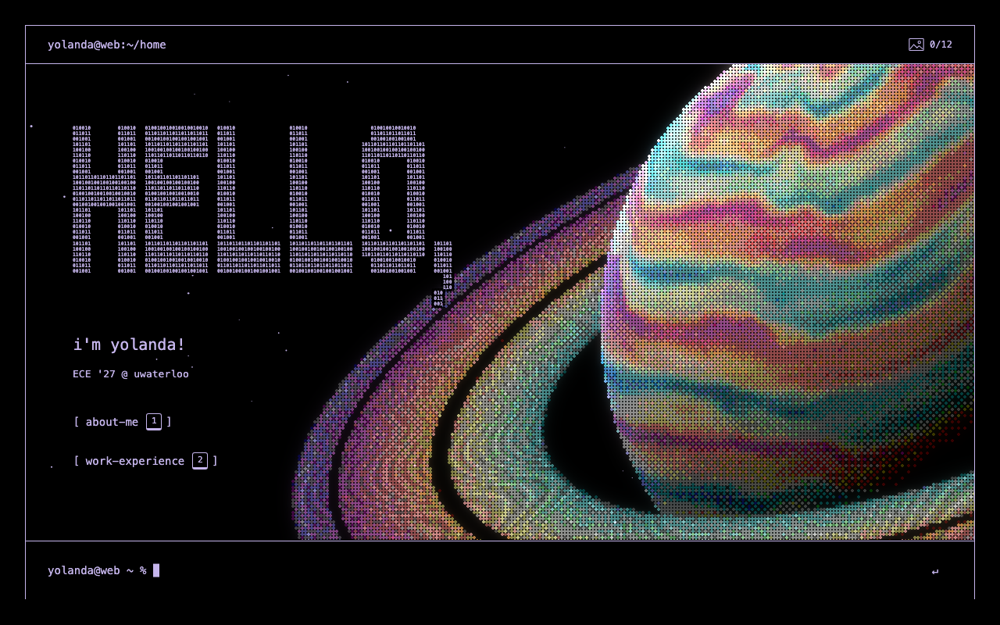

Planet / evaluation
Goal: a convincing, richly coloured world seen through a luminous dot texture.
Current status: improved candidate. Surface detail and dot dominance remain open. No user aesthetic acceptance yet.
Baseline · repeated spectral bands

Candidate · source-based cloud structure

| Criterion | Review |
|---|---|
| Volume and depth | Pass for this candidate |
| Natural surface detail | Partial — source detail remains soft |
| Rich coherent colour | Pass for this candidate; palette acceptance open |
| Luminous dot texture | Partial — regular grid still conspicuous |
| Distinct rings and readable composition | Pass in inspected Chromium views |
| Interaction and rendering | 21 automated checks passed; real hidden-tab behaviour, Safari and physical touch unverified |
Loop: preserve baseline → render matched views → inspect against criteria → fix one cause → rerun checks → retain or reject.
Interactive candidate and material options · Success criteria and run command · Iteration record and remaining gaps
Visual review and automated checks are separate. This page does not declare the design finished.